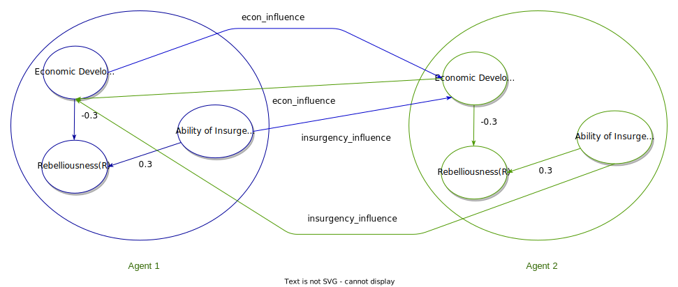

Serial
Serial#
The two-agent model used in this tutorial is described below:
Each agent has three nodes: Economic Development(ED), Rebelliousness(R), Ability of Insurgents to Control Population(AICP).
The two agents will interact with each other, and their final values for Rebelliousness will be recorded.
By default, the simulation will run 100 times.
In a python file, import the cuda_hybrid module:
import cuda-hybrid as md
Next, create a model using generate_model:
hm = md.generate_model(2, "newman", "insurgency_simple.txt")
The text file can be found here: insurgency_simple.txt
Now create a function that simulates the interactions between the agents:
Note
The interactions can be broken up into different methods, but these methods need to be wrapped
into one function only in order to be passed to the run_serial method.
The two rules for agent interactions for this model are:
#. If the sum of ED values of an agent’s neighbors is larger than 110% of the agent’s ED, the agent’s ED will increase by 5%. If the sum is smaller than 90% of the agent’s ED, the agent’s ED will decrease by 5%. The code for this is illustrated below:
def econ_influence(val, influencing): threshold = 10 impact = 5 avg = 0.0 for num in influencing: avg += num lowerThresh = 1 - threshold / 100.0 upperThresh = 1 + threshold / 100.0 result = val if avg > val * upperThresh: result += val * impact / 100.0 elif avg < val * lowerThresh: result -= val * impact / 100.0 return result
#. The agent’s new ED value from the previous step will be influenced by its neighbors’ AICP values. Deduct 10% of the total AICPs of its neighbors from its new ED value:
def insurgency_influence(influencedVal, influencing): rate = 0.1 avg = 0.0 result = influencedVal for num in influencing: result -= rate * num avg /= len(influencing) return result
The two above methods can be put into one function as follows:
def insurgency_interact(hm):
if hm.ABM_adj.shape[0] <= 1:
return
# loop through each agent
for agent in range(hm.ABM_adj.shape[0]):
# grab the neighbors
friends = hm.get_neighbors(agent)
# get the numeric index for EconomicDevelopment and AbilityOfInsurgentsToControlThePopulation
econIdx = hm.fcm_labels["EconomicDevelopment"]
insurgeIdx = hm.fcm_labels["AbilityOfInsurgentsToControlThePopulation"]
econList = []
insurgeList = []
# get the list of values for all the neighbors for the two concepts
for friend in friends:
econList.append(hm.node_val[friend][econIdx])
insurgeList.append(hm.node_val[friend][insurgeIdx])
# agents now influence each other
hm.node_future_val[agent][econIdx] = econ_influence(
hm.node_val[agent][econIdx],
econList
)
hm.node_future_val[agent][econIdx] = insurgency_influence(
hm.node_future_val[agent][econIdx],
insurgeList
)
Note
The above method takes the HybridModel object as the only argument. This can be changed depending on the use case
To run the simulation, call the run_serial. The last argument, which is the number of steps
is set to 20 by default. The arguments for the interaction function must be put into an array:
hm.run_serial(["Rebelliousness"], [0.05], 10, insurgency_interact, [hm], 100)
Runtime can be recorded by using timeit:
from timeit import Timer
def run():
hm = generate_model(2, "newman", "insurgency_simple.txt")
hm.run_serial(["Rebelliousness"], [0.05], 10, insurgency_interact, [hm], 100)
t = Timer('run()','from test_insurgency import run')
# run the function a total of 20 times and measure the time
print(t.timeit(20))
Another way to record time is to use %timeit and %run via ipython package. After everything has been set up,
%timeit can be used as:
In [75]: %timeit hm.run_serial(["Rebelliousness"], [0.05], 10, insurgency_interact, [hm], 100)
If the model is in a python file, the following code will run the file from within ipython and measure the time:
In [10]: %timeit %run ./test_insurgency.py
The average values of all the focus nodes across all agents are displayed below:
The recorded time using the second method was 1.35 ms seconds.